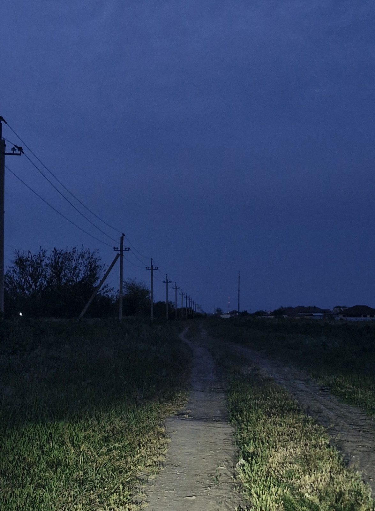

오시는 길
천문대는 여늘역에서 시내버스 31번으로 34분 걸리며, 밤 10시 이후에는 진입로에서 전조등을 끄고 들어와야 합니다.
주소
여늘시 별재로 612 (가상) · 해발 612 m
관람 시간
- 주간 (태양 관측)
- 14:00~17:00
- 야간 (공개 관측)
- 19:00~23:00
- 입장 마감
- 22:30
- 휴관
- 월요일 · 공휴일이면 다음 날 · 1월 1일 · 설날·추석 당일
시내버스
31
여늘역 → 시청 → 별재 입구 → 천문대
편도 34분
- 천문대행 출발
- 17:10 · 18:10 · 19:10 · 20:10
- 천문대 출발
- 20:55 · 21:55 · 22:40 막차
35
여늘 시외버스터미널 → 별재 입구 → 천문대 (토·일·공휴일)
편도 28분
- 천문대행 출발
- 17:40 · 19:40
- 천문대 출발
- 21:30 · 23:10 막차
마지막 회차(21:30, 50분)가 끝나면 22:20이다. 31번 막차는 22:40에 천문대 정류장을 떠난다.
주차
| 주차장 | 면수 | 요금 | 비고 |
|---|---|---|---|
| 천문대 주차장 | 48면 | 무료 | 22:00 이후 진입 시 전조등을 끄고 미등으로 |
| 별재 입구 공영주차장 | 120면 | 무료 | 천문대까지 셔틀 없음 · 걸어서 1.2 km, 25분 |
요금
| 프로그램 | 성인 | 청소년·어린이 |
|---|---|---|
| 주간 태양 관측 | 무료 | 무료 |
| 저녁 공개 관측 | 4,000원 | 2,000원 |
| 토성 관측회 | 5,000원 | 3,000원 |
| 어린이 별자리 교실 | 보호자 2,000원 | 3,000원 |
| 천체사진 기초 실습 | 25,000원 | — |
7세 미만은 저녁 공개 관측이 무료다. 여늘시민은 신분증을 보이면 절반 요금이다.
야간 진입 규칙
- 01
밤 10시 이후 천문대 주차장으로 들어오는 차는 진입로 300 m 앞 표지판부터 전조등을 끄고 미등만 켠다.
- 02
관측 마당과 관측실에서는 흰빛 손전등과 휴대전화 플래시를 쓰지 않는다. 적색 손전등은 안내 데스크에서 빌린다.
- 03
휴대전화 화면은 가장 어둡게 낮춘다. 이 사이트 위쪽의 '적색 화면'을 켜면 화면 전체가 빨강과 검정으로 바뀐다.
- 04
눈이 어둠에 익는 데 20~30분이 걸린다. 밝은 빛을 한 번 보면 처음부터 다시 익혀야 한다.
